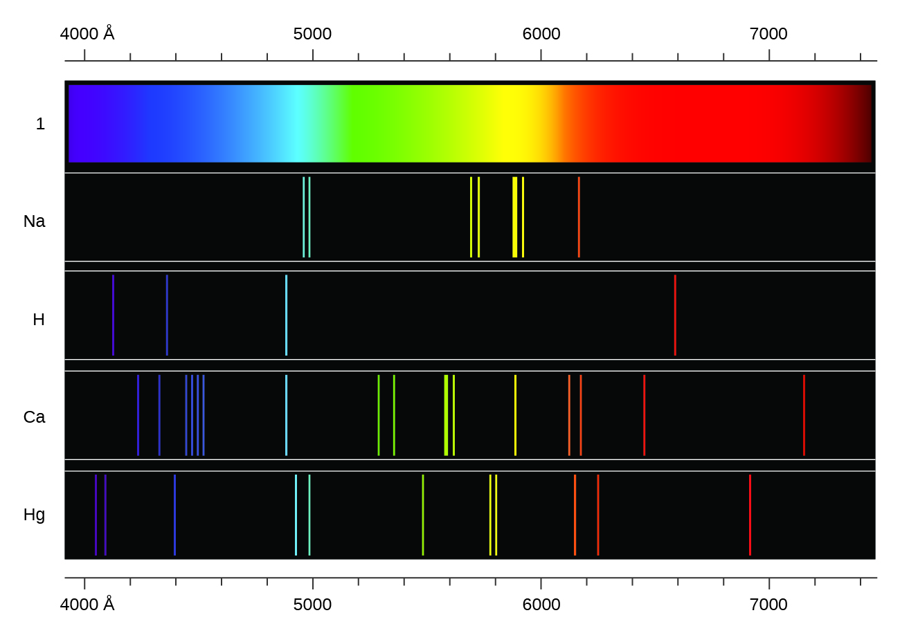
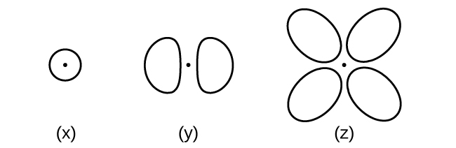

1. La luz producida por un letrero rojo de neón se debe a la emisión de luz por los átomos de neón excitados. Describe cualitativamente el espectro producido al pasar la luz de una lámpara de neón a través de un prisma.
2. Una estación de radio FM que se encuentra en 103.1 en las transmisiones de marcación FM a una frecuencia de 1.031 × 108 s-1 (103.1 MHz). ¿Cuál es la longitud de onda de estas ondas de radio en metros?
3. FM-95, una estación de radio FM, transmite a una frecuencia de 9.51 × 107 s-1 (95.1 MHz). ¿Cuál es la longitud de onda de estas ondas de radio en metros?
4. Se produce una línea violeta brillante a 435.8 nm en el espectro de emisión de vapor de mercurio. ¿Qué cantidad de energía, en julios, debe ser liberada por un electrón en un átomo de mercurio para producir un fotón de esta luz?
5. La luz con una longitud de onda de 614.5 nm se ve de color naranja. ¿Cuál es la energía, en julios, por fotón de esta luz naranja? ¿Cuál es la energía en eV (1 eV = 1.602 × 10-19 J)?
6. Los átomos de litio calentados emiten fotones de luz con una energía de 2.961 × 10-19 J. Calcula la frecuencia y la longitud de onda de uno de estos fotones. ¿Cuál es la energía total en 1 mol de estos fotones? ¿Cuál es el color de la luz emitida?
7. Un fotón de luz producido por un láser quirúrgico tiene una energía de 3.027 × 10-19 J. Calcula la frecuencia y la longitud de onda del fotón. ¿Cuál es la energía total en 1 mol de fotones? ¿Cuál es el color de la luz emitida?
8. Cuando los iones rubidio se calientan a una temperatura alta, se observan dos líneas en su espectro lineal en las longitudes de onda (a) 7.9 × 10-7 m y (b) 4.2 × 10-7 m. ¿Cuáles son las frecuencias de las dos líneas? ¿Qué color vemos cuando calentamos un compuesto de rubidio?
9. El espectro de emisión de cesio contiene dos líneas cuyas frecuencias son (a) 3.45 × 1014 Hz y (b) 6.53 × 1014 Hz. ¿Cuáles son las longitudes de onda y las energías por fotón de las dos líneas? ¿De qué color son las líneas?
10. Los fotones de radiación infrarroja son responsables de gran parte del calor que sentimos al sostener nuestras manos ante un incendio. Estos fotones también calentarán otros objetos. ¿Cuántos fotones infrarrojos con una longitud de onda de 1.5 × 10-6 m deben ser absorbidos por el agua para calentar una taza de agua (175 g) de 25.0 °C a 40 °C?
11. Uno de los dispositivos radiográficos utilizados en el consultorio de un dentista emite una radiografía de longitud de onda de 2.090 × 10-11 m. ¿Cuál es la energía, en julios, y la frecuencia de esta radiografía?
12. Los ojos de ciertos reptiles transmiten una única señal visual al cerebro cuando los receptores visuales son golpeados por fotones de una longitud de onda de 850 nm. Si se requiere una energía total de 3.15 × 10-14 J para disparar la señal, ¿cuál es el número mínimo de fotones que deben golpear el receptor?
13. La televisión en color RGB y las pantallas de computadora usan tubos de rayos catódicos que producen colores al mezclar la luz roja, verde y azul. Si miramos la pantalla con una lupa, podemos ver cómo se encienden y apagan los puntos individuales a medida que cambian los colores. Usando un espectro de luz visible, determina la longitud de onda aproximada de cada uno de estos colores. ¿Cuál es la frecuencia y la energía de un fotón de cada uno de estos colores?
14. Responde las siguientes preguntas sobre un láser Blu-ray:
(a) El láser en un reproductor de Blu-ray tiene una longitud de onda de 405 nm. ¿En qué región del espectro electromagnético se encuentra esta radiación? ¿Cuál es su frecuencia?
(b) Un láser Blu-ray tiene una potencia de 5 milivatios (1 vatio = 1 J s-1). ¿Cuántos fotones de luz produce el láser en 1 hora?
(c) La resolución ideal de un reproductor que usa un láser (como un reproductor de Blu-ray), que determina qué tan cerca se pueden almacenar los datos en un disco compacto, se determina mediante la siguiente fórmula: Resolución = 0.60 (λ/NA , donde λ es la longitud de onda del láser y NA es la apertura numérica. La apertura numérica es una medida del tamaño del punto de luz en el disco; cuanto más grande sea la NA, más pequeña es la mancha. En un sistema típico de Blu-ray, NA = 0.95. Si el láser de 405 nm se usa en un reproductor de Blu-ray, ¿qué es lo más cerca que se puede almacenar la información en un disco Blu-ray?
(d) La densidad de datos de un disco Blu-ray con un láser de 405 nm es de 1.5 × 107 bits mm-2. Los discos tienen un diámetro exterior de 120 mm y un agujero de 15 mm de diámetro. ¿Cuántos bits de datos pueden estar contenidos en el disco? Si un disco Blu-ray puede contener 9,400,000 páginas de texto, ¿cuántos bits de datos se necesitan para una página escrita? (Sugerencia: determina el área del disco que está disponible para guardar datos. El área dentro de un círculo está dada por A = πr2, donde el radio r es la mitad del diámetro).
15. ¿Cuál es la frecuencia umbral para el metal de sodio si un fotón con una frecuencia de 6.66 × 1014 s-1 expulsa un electrón con 7.74 × 10-20 J de energía cinética? ¿Se observará el efecto fotoeléctrico si el sodio se expone a la luz naranja?
16. ¿Por qué el electrón en un átomo de hidrógeno de Bohr se enlaza menos estrechamente cuando tiene un número cuántico de 3 que cuando tiene un número cuántico de 1?
17. ¿Qué significa decir que la energía de los electrones en un átomo se cuantifica?
18. Usando el modelo de Bohr, determina la energía, en julios, necesaria para ionizar un átomo de hidrógeno en estado fundamental. Muestra tus cálculos.
19. El electrón voltio (eV) es una unidad conveniente de energía para expresar energías de escala atómica. Es la cantidad de energía que gana un electrón cuando se la somete a un potencial de 1 voltio; 1 eV = 1.602 × 10-19 J. Usando el modelo de Bohr, determina la energía, en velectrones voltio, del fotón producido cuando un electrón en un átomo de hidrógeno se mueve desde la órbita con n = 5 a la órbita con n = 2. Muestra tus cálculos.
20. Usando el modelo de Bohr, determina la energía más baja posible, en julios, para el electrón en el ion Li2+.
21. Usando el modelo de Bohr, determina la energía más baja posible para el electrón en el ion He+.
22. Usando el modelo de Bohr, determina la energía de un electrón con n = 6 en un átomo de hidrógeno.
23. Usando el modelo de Bohr, determina la energía de un electrón con n = 8 en un átomo de hidrógeno.
24. ¿A qué distancia del núcleo en angstroms (1 angstrom = 1 × 10-10 m) está el electrón en un átomo de hidrógeno si tiene una energía de –8.72 × 10-20 J?
25. ¿Cuál es el radio, en angstroms, del orbital de un electrón con n = 8 en un átomo de hidrógeno?
26. Usando el modelo de Bohr, determina la energía en julios del fotón producido cuando un electrón en un ion He+ se mueve desde la órbita con n = 5 a la órbita con n = 2.
27. Utilizando el modelo de Bohr, determina la energía en julios del fotón producido cuando un electrón en un ion Li2+ se mueve desde la órbita con n = 2 a la órbita con n = 1.
28. Considera un gran número de átomos de hidrógeno con electrones distribuidos al azar en las órbitas n = 1, 2, 3 y 4.
(a) ¿Cuántas longitudes de onda diferentes de la luz emiten estos átomos a medida que los electrones caen en orbitales de menor energía?
(b) Calcula las energías de luz más bajas y más altas producidas por las transiciones descritas en la parte (a).
(c) Calcula las frecuencias y longitudes de onda de la luz producida por las transiciones descritas en la parte (b).
29. ¿En qué se parecen el modelo de Bohr y el modelo de Rutherford del átomo? ¿En qué se diferencian?
30. Los espectros de hidrógeno y de calcio se muestran aquí.

¿Qué causa las líneas en estos espectros? ¿Por qué los colores de las líneas son diferentes? Sugiere una razón para la observación de que el espectro de calcio es más complicado que el espectro de hidrógeno.
31. ¿En qué se parecen el modelo de Bohr y el modelo de mecánica cuántica del átomo de hidrógeno? ¿En qué se diferencian?
32. ¿Cuáles son los valores permitidos para cada uno de los cuatro números cuánticos: n, l, ml y ms?
33. Describe las propiedades de un electrón asociado con cada uno de los siguientes cuatro números cuánticos: n, l, ml y ms.
34. Responde las siguientes preguntas:
(a) Sin usar números cuánticos, describe las diferencias entre las capas, subcapas y orbitales de un átomo.
(b) ¿En qué se diferencian los números cuánticos de las capas, subcapas y orbitales de un átomo?
35. Identifica la subcapa en la que se encuentran los electrones con los siguientes números cuánticos:
(a) n = 2, l = 1
(b) n = 4, l = 2
(c) n = 6, l = 0
36. ¿Cuál de las subcapas descritas en la pregunta anterior contienen orbitales degenerados? ¿Cuántos orbitales degenerados hay en cada uno?
37. Identifica la subcapa en la que se encuentran los electrones con los siguientes números cuánticos:
(a) n = 3, l = 2
(b) n = 1, l = 0
(c) n = 4, l = 3
38. ¿Cuál de las subcapas descritas en la pregunta anterior contiene orbitales degenerados? ¿Cuántos orbitales degenerados hay en cada uno?
39. Haz un bosquejo de la superficie límite de un dx2-y2 y un orbital py. Asegúrate de mostrar y etiquetar los ejes.
40. Dibuja los orbitales px y dxz. Asegúrate de mostrar y etiquetar las coordenadas.
41. Considere los orbitales que se muestran aquí en forma de esquema.

(a) ¿Cuál es el número máximo de electrones contenidos en un orbital de tipo (x)? De tipo (y)? De tipo (z)?
(b) ¿Cuántos orbitales de tipo (x) se encuentran en una capa con n = 2? ¿Cuántos de tipo (y)? ¿Cuántos de tipo (z)?
(c) Escribe un conjunto de números cuánticos para un electrón en un orbital de tipo (x) en una capa con n = 4. De un orbital de tipo (y) en una capa con n = 2. De un orbital de tipo (z) en una capa con n = 3.
(d) ¿Cuál es el valor n más pequeño posible para un orbital de tipo (x)? De tipo (y)? De tipo (z)?
(e) ¿Cuáles son los posibles valores de l y ml para un orbital de tipo (x)? De tipo (y)? De tipo (z)?
42. Estado del principio de incertidumbre de Heisenberg. Describe brevemente lo que implica el principio.
43. ¿Cuántos electrones podrían mantenerse en la segunda capa de un átomo si el número cuántico de espín ms podría tener tres valores en lugar de solo dos? (Pista: considera el principio de exclusión de Pauli).
44. ¿Cuál de las siguientes ecuaciones describe el comportamiento similar a las partículas? ¿Cuáles describen el comportamiento en forma de onda? ¿Alguna involucra ambos tipos de comportamiento? Describe las razones de tus elecciones.
(a) c = λν
(b) E = mν22
(c) r = n2a0Z
(d) E = hν
(e) λ = hmν
45. Escribe un conjunto de números cuánticos para cada uno de los electrones con un n de 4 en un átomo Se.
46. Lee las etiquetas de varios productos comerciales e identifica los iones monoatómicos de al menos cuatro elementos de transición contenidos en los productos. Escribe las configuraciones electrónicas completas de estos cationes.
47. Lee las etiquetas de varios productos comerciales e identifica los iones monoatómicos de al menos seis elementos principales del grupo contenidos en los productos. Escribe las configuraciones electrónicas completas de estos cationes y aniones.
48. Usando la notación completa de subcapa (no abreviaturas, 1s22s22p6, etc.), predice la configuración electrónica de cada uno de los siguientes átomos:
(a) C
(b) P
(c) V
(d) Sb
(e) Sm
49. Usando la notación completa de subcapa (1s22s22p6, etc.), predice la configuración electrónica de cada uno de los siguientes átomos:
(a) N
(b) Si
(c) Fe
(d) Te
(e) Tb
50. ¿Es 1s22s22p6 el símbolo para una propiedad macroscópica o una propiedad microscópica de un elemento? Explica tu respuesta.
51. ¿Qué información adicional necesitamos para responder a la pregunta "¿Qué ion tiene la configuración electrónica 1s22s22p63s23p6"?
52. Dibuja el diagrama orbital para la capa de valencia de cada uno de los siguientes átomos:
(a) C
(b) P
(c) V
(d) Sb
(e) Ru
53. Usa un diagrama orbital para describir la configuración electrónica de la capa de valencia de cada uno de los siguientes átomos:
(a) N
(b) Si
(c) Fe
(d) Te
(e) Mo
54. Usando la notación completa de subshell (1s22s22p6, etc.), predice las configuraciones electrónicas de los siguientes iones.
(a) N3-
(b) Ca2+
(c) S-
(d) Cs2+
(e) Cr2+
(f) Gd3+
55. ¿Qué átomo tiene la configuración electrónica 1s22s22p63s23p64s23d104p65s24d2?
56. ¿Qué átomo tiene la configuración electrónica 1s22s22p63s23p63d74s2?
57. ¿Qué ion con una carga +1 tiene la configuración electrónica 1s22s22p63s23p63d104s24p6? ¿Qué ion con una carga –2 tiene esta configuración?
58. ¿Cuál de los siguientes átomos contiene solo tres electrones de valencia: Li, B, N, F, Ne?
59. ¿Cuál de los siguientes tiene dos electrones no apareados?
(a) Mg
(b) Si
(c) S
(d) Tanto Mg como S
(e) Tanto Si como S
60. ¿Qué átomo se esperaría que tuviera una subcapa 6p medio llena?
61. ¿Qué átomo se esperaría que tuviera una subcapa 4s medio llena?
62. En una zona de Australia, el ganado no prosperó a pesar de la presencia de forraje adecuado. Una investigación demostró que la causa era la ausencia de suficiente cobalto en el suelo. El cobalto forma cationes en dos estados de oxidación, Co2+ y Co3+. Escribe la estructura electrónica de los dos cationes.
63. El talio se usó como un veneno en la historia de misterio de Agatha Christie "El caballo pálido". El talio tiene dos formas catiónicas posibles, +1 y +3. Los compuestos +1 son los más estables. Escribe la estructura electrónica del catión +1 del talio.
64. Escribe las configuraciones electrónicas para los siguientes átomos o iones:
(a) B3+
(b) O-
(c) Cl3+
(d) Ca2+
(e) Ti
65. El cobalto –60 y el yodo –131 son isótopos radiactivos comúnmente utilizados en medicina nuclear. ¿Cuántos protones, neutrones y electrones hay en los átomos de estos isótopos? Escribe la configuración electrónica completa para cada isótopo.
66. Escribe un conjunto de números cuánticos para cada uno de los electrones con una n de 3 en un átomo Sc.
67. Basándote en sus posiciones en la tabla periódica, predice cuál tiene el radio atómico más pequeño: Mg, Sr, Si, Cl, I.
68. En base a sus posiciones en la tabla periódica, predice cuál tiene el radio atómico más grande: Li, Rb, N, F, I.
69. Según sus posiciones en la tabla periódica, predice cuál tiene la primera energía de ionización más grande: Mg, Ba, B, O, Te.
70. Basándote en sus posiciones en la tabla periódica, predice cuál tiene la primera energía de ionización más pequeña: Li, Cs, N, F, I
.
71. Según sus posiciones en la tabla periódica, clasifica los siguientes átomos en orden de aumentar la primera energía de ionización: F, Li, N, Rb
72. Basándote en sus posiciones en la tabla periódica, clasifica los siguientes átomos en orden de aumentar la primera energía de ionización: Mg, O, S, Si
73. ¿Los átomos de qué grupo en la tabla periódica tienen una configuración electrónica de capa de valencia de ns2np3?
74. ¿Los átomos de qué grupo en la tabla periódica tienen una configuración electrónica de capa de valencia de ns2?
75. Basándote en sus posiciones en la tabla periódica, enumere los siguientes átomos en orden de radio creciente: Mg, Ca, Rb, Cs.
76. Basándote en sus posiciones en la tabla periódica, enumera los siguientes átomos en orden de radio creciente: Sr, Ca, Si, Cl.
77. En función de sus posiciones en la tabla periódica, enumera los siguientes iones en orden de radio creciente: K+, Ca2+, Al3+, Si4+.
78. Haz una lista de los siguientes iones en orden de radio creciente: Li+, Mg2+, Br-, Te2-.
79. ¿Qué átomo y/o ion es (son) isoelectrónico con Br+: Se2+, Se, As-, Kr, Ga3+, Cl-?
80. ¿Cuál de los siguientes átomos e iones es (son) isoelectrónicos con S2+: Si4+, Cl3+, Ar, As3+, Si, Al3+?
81. Compara los números de protones y electrones presentes en cada uno para clasificar los siguientes iones en orden de radio creciente: As3-, Br-, K+, Mg2+.
82. De los cinco elementos Al, Cl, I, Na, Rb, ¿cuál tiene la reacción más exotérmica? (E representa un átomo). ¿Qué nombre se le da a la energía para la reacción? Sugerencia: ten en cuenta que el proceso descrito no corresponde a la afinidad de electrones).
E+(g) + e- → E(g)
83. De los cinco elementos Sn, Si, Sb, O, Te, ¿cuál tiene la reacción más endotérmica? (E representa un átomo). ¿Qué nombre se le da a la energía para la reacción?
E(g) → E+(g) + e-
84. Los radios iónicos de los iones S2-, Cl- y K+ son 184, 181, 138 pm respectivamente. Explica por qué estos iones tienen diferentes tamaños a pesar de que contienen la misma cantidad de electrones.
85. ¿Qué átomo del grupo principal se esperaría que tuviera la segunda energía de ionización más baja?
86. Explica por qué el Al es un miembro del grupo 13 en lugar del grupo 3?